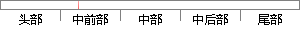

支持向量机方法是一种新的机器学习方法，已广泛应用在指纹识别、人脸识别等模式识别的研究上。
片段位置图

相似结果|
相似片段 1：发展起来的一种新的通用学习方法，它在解决小样本、非线性以及高维模式识别等问题中表现出许多独特的优势。近年来，支持向量机由于其出色的学习性能，已成为机器学习领域的一个研究热点，并在许多领域中得到应用，如人脸检测[51]、人脸识别[52,50]、细胞图像识别[54]、指纹识别[55]、图像检索[56]等。
|
※ 片段修改建议 ※
近似词参考：- 支持：撑持 支撑
- 方法：方式 要领 法子
- 机器：机械 呆板
- 识别：辨认
- 别的：此外 另外 其它 其余
- 研究：钻研
系统自动生成语句：撑持向量机方式是一种新的机械学习方式，已广泛应用在指纹辨认、人脸辨认等模式辨认的钻研上。
注：本片段修改建议为系统自动生成，仅供参考。